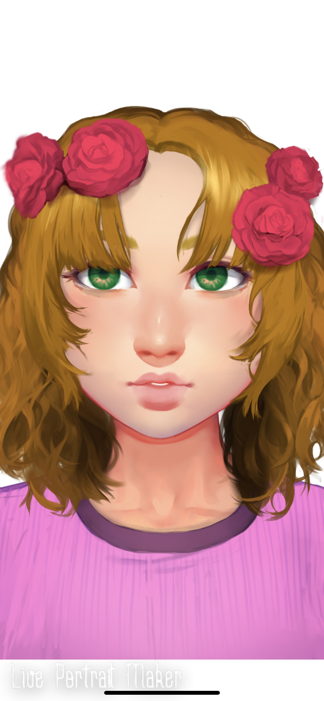

| Name: | Sophie Hemmingway |
| Height: | 5,0 |
| Age: | 13 |
| Role: | learning how to fight doesn't really have a job |
| Pronouns: | she/her |
| Sexality: | unknown |
| status: | dead |
| favourite | |
| colour: | pink |
| weapon of choice | sword |
Sophie was five when her parents joined the resistance group Veronica was 12. Their parents don’t visit the kids camp often so Sophie never really got to know them. Aera and her brother were really the only other kids in the group. There were a few teenagers but Sophie didn’t get to hang out with the older kids. Aera and Min-jun quickly became like older siblings to her and were very protective of her. (she dies at the end of the first book for character development of the others and to make the reader sad.)
